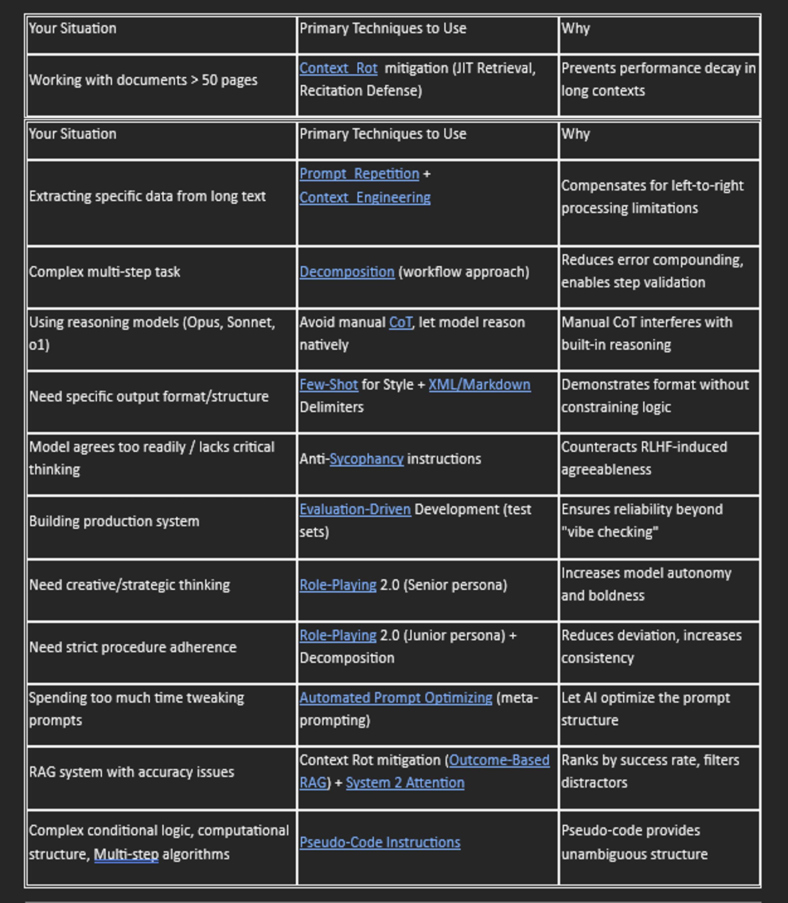

The_2026_Prompt_Engineering_Field_Guide¶
The 2026 Prompt Engineering Field Guide
Quick Reference: Technique Selection Guide
Use this matrix to quickly identify which techniques apply to your situation:
Table 1:

Model-Specific Guidance:
Small/Non-Reasoning Models : Focus on Prompt Repetition, Few-Shotexamples, XML structure, Decomposition
Large/Reasoning Models : Focus on Context Engineering, Avoid manual CoT, Anti-Sycophancy, minimal structure
All Models: Use Evaluation-Driven Development for production, XML/Markdown for clarity.
2026 Practice: Prompt Repetition¶
• What it is: Prompt repetition acts like a 'second read-through.' The first pass builds the mental context; the second pass extracts the data with full context awareness.
• Replaces: Old 2024 pattern of entering a prompt once
• Source:” Prompt Repetition Improves Non-Reasoning LLMs" by Google Research (specifically Yaniv Leviathan, Matan Kalman, and Yossi Matias)
• Why it matters-
The Problem: LLMs read strictly left-to-right. When the model reads the first word of your prompt, it has "zero knowledge" of the last word. It cannot "look ahead." This is a disadvantage compared to humans, who can scan a document before reading it.
The Fix: By repeating the prompt, the second copy of the prompt acts as a processing layer that has full visibility of the first copy.
First Pass (Prompt Copy 1): The model reads it linearly (imperfect understanding).
Second Pass (Prompt Copy 2): The model reads it again, but now it can "attend" back to the entirety of Copy 1. It effectively simulates "bi-directional" understanding (reading the whole text at once).
Example structure: USE IT FOR: "Non-Reasoning" or Retrieval Tasks.
Examples: "Extract the invoice number from this 50-page document," "Find the 25th name in this list," or "Classify this text based on these 100 categories." In these cases, the model often forgets the beginning by the time it reaches the end. Repetition fixes this "memory leak."
• The Cost Trade-off
Latency (Speed): Surprisingly, the impact on speed is negligible. The "pre-fill" (reading) stage of modern GPUs is highly parallelized. Reading 2x text takes almost the same time as reading 1x text.
Cost: It doubles your Input Token cost. If you are processing a 100-page document, you are paying for 200 pages.
2026 Practice: Minimizing Context Rot¶
What it is: Minimize performance decay by utilizing prompt techniques¶
Irrelevant text that looks like the answer (Semantic Distractors) is 3x more damaging than random noise. Filter ruthlessly.
• Replaces: Old 2024 pattern prompts with large number of tokens
• Sources:”Context Length Alone Hurts LLM Performance Despite Perfect Retrieval" (Nov 2025, EMNLP), “Context Rot: How Increasing Input Tokens Impacts LLM Performance” Chroma Technical Report (Kelly Hong, Anton Trpynikov, Jeff Huber Nov 2025), “Context Rot is Real. Here’s how we built memory that learns.” Roampal Jan 2026
• Why it matters-
The Problem: LLMs are typically presumed to process context uniformly—that is, the model should handle the 10,000th token just as reliably as the 100th. However, in practice, this assumption does not hold. We observe that model performance varies significantly as input length changes, even on simple tasks.
The Fix
"Just-in-Time" (JIT) Retrieval (The Anthropic/Claude Code Method) ▪ Concept: Instead of dumping an entire codebase or handbook into the context at the start, you provide the model with a "File Index" or "Table of Contents."
The Flow
▪ User: "Fix the bug in the auth system." ▪ System: (Loads only file names).
▪ Model: "I see auth.py. Please read auth.py." ▪ System: (Loads only content of auth.py).
▪ Why it works: It keeps the context "lean," ensuring the model only processes tokens it explicitly requested, drastically reducing rot.
The "Recitation" Defense ▪ Concept: A prompting technique validated by the EMNLP 2025 paper. ▪ The Instruction: Force the model to quote the evidence before answering.
▪ Prompt: "First, copy the exact sentences from the context that support your answer. Then, answer the question."
▪ Why it works: This forces the model to move the relevant tokens from the "distant" context (start/middle of the window) into its "immediate" working memory (the generation output), effectively resetting its attention mechanism.
Outcome-Based RAG (The "Roampal" Standard) ▪ Concept: Stop ranking documents by "Semantic Similarity" (how much they look like the query).
The Fix: Rank documents by "Success Rate."
Mechanism: If Document A was retrieved for a query and the user clicked "Thumbs Up," permanently boost Document A's score for that query. Over time, "rotting" distractors (documents that look relevant but aren't) naturally sink to the bottom.
Context Caching with "Decay Policies" ▪ Concept: Treat the context window like a cache, not a log.
The Fix: Implement a "Decay Function" for long conversations. If a piece of information (e.g., a file uploaded 20 turns ago) hasn't been referenced in the last 5 turns, summarize and evict it. Do not let it sit in the context window occupying "attention bandwidth."
2026 Practice: Context Engineering (structuring data)¶
What it is: What you put in the context window (documents, code snippets, history) and Where you put relevant context matters more than the specific phrasing of the request.
• Replaces: Old 2024 pattern of writing a single perfect prompt
• Sources: "System 2 Attention (is something you might need too)" (Weston & Sukhbaatar, Meta/FAIR), "Lost in the Middle: How Language Models Use Long Contexts" (Liu et al., Stanford/Berkeley), “Effective context engineering for AI agents” (Effective context engineering for AI agents Anthropic)
• Why it matters-
The Problem: LLMs are easily distracted by irrelevant context. Accuracy degrades when relevant info is in the middle of a long prompt. This killed the "dump everything in the context window" strategy and gave rise to "Context Reranking" (putting key info at the start/end).
The Fix: Treat the context window as a database. Use techniques like asking the model to first rewrite the context to remove irrelevant details before answering.
-Clean your RAG (Retrieval Augmented Generation) data before the model sees it.
-Put key information at the start or the end.
-Be mindful of what you put in the context window. Treat the context window as a database. To maintain focus include only the most relevant and high signal tokens in the context window.
2026 Practice: Avoid manually triggering CoT for reasoning models¶
• Replaces: Old 2024 pattern of Using "Chain of Thought" (CoT) prompting ("Let's think step by step") for everything.
• Sources: OpenAI o1 System Card & Documentation (Sep 2024), “The Decreasing Value of Chain of Thought in Prompting” (Lennart Meincke, Ethan Mollick, Lilach Mollick, Dan Shapiro ,University of Pennsylvania Wharton Generative AI Labs, June 2025, Technical Report)
• Why it matters-
The Problem:
The Wharton 2025 study tested Chain-of-Thought prompting across model types and found:
Small/Non-Reasoning Models: Show modest average improvements (5-15%) BUT with significantly increased variability in answers—meaning less consistent results
Large/Reasoning Models: Gain only marginal benefits (2-5%) while incurring substantial time costs (20-80% increase in latency)
The Fix
For Reasoning Models: Tell the model what you want, not how to think. Do not manually prompt "think step by step." These models have built-in reasoning; manual CoT interferes with their native reasoning process.
For Non-Reasoning Models CoT can provide modest gains for complex tasks, but expect inconsistent results. Use only when accuracy variability is acceptable and you're willing to validate outputs more carefully.
Recommendation: Default to NOT using manual CoT. Only consider it for non-reasoning models on complex tasks where you have robust output validation in place.
2026 Practice: Decomposition (The “Flow” Approach)¶
• Replaces: Old 2024 pattern of writing one massive "mega-prompt" to handle a complex task.
• Sources: "Least-to-Most Prompting Enables Complex Reasoning in Large Language Models" (Zhou et al., Google Research, April 2023, [2205.10625]), "Decomposing Tasks into Atomic Steps Improves LLM Performance" (EMNLP 2025, University of Washington), "An Approach for Systematic Decomposition of Complex LLM Tasks" (Zhou T. et al, Columbia University, Oct 2025)
• Why it matters-
The Problem: As the task complexity increases or when the individual reasoning steps of the task themselves are hard to learn, especially when embedded in more complex tasks both LLMs and SLM can struggle. Research shows error rates compound in long prompts. Atomic steps allow you to evaluate and fix intermediate outputs.
The Fix: Decompose prompts into a chain of atomic tasks.
Instead of one prompt doing "Research, Analyze, and Summarize," use a workflow:
▪ Prompt A: "Extract key facts from this text." (Output)
▪ Prompt B: "Using [Output A], identify conflicts."
▪ Prompt C: "Summarize [Output B] for a client."
2026 Practice: XML/Markdown Delimiters are Mandatory¶
What it is: 2026 Practice: Use XML or markdown delimiters
• What it is: Using XML tags like <instruction> and <document> or markdown
formatting in your prompt.
• Replaces: Old 2024 pattern of using quotes or all caps to separate parts of a prompt
• Sources: "Use XML tags to structure your prompts”, (Jan 2025, Claude Docs Use XML tags to structure your prompts - Claude Docs), Effective Prompt Engineering with the Markdown Prompts Framework (CodeSignal Learn, Jan 2026)
• Why it matters-
The Problem: Context leakage can occur when a model confuses the prompt instructions with the text or other context it is supposed to process.
The Fix:
Models understand XML, using tags like <instruction> and <document>
and will tell the model that <instructions> indicate instructions, and <document> indicate text that is to process. Models also understand markdown. Markdown can provide consistent formatting and organization for prompts to improve
responses. Use XML for complex nested structures; Markdown for simpler
formatting.
• Example structure: USE IT FOR: "Non-Reasoning" or Retrieval Tasks.
Example: Using XML
"Analyze the text inside the <data> tags using the criteria in the
<rubric> tags."
Example: Using Markdown
▪ Notes-
- You can also ask the model to respond in markdown.
- Using code blocks in a prompt is a key case for using markdown.
- There are many online tools to convert plain text to markdown.
Introduction - Write a short paragraph explaining the impact of climate change. - Include one bold example of a recent climate event.
Data Summary - Present the following data in a code block as JSON: { "location": "Global", "year": 2024, "effects": ["Rising temperatures", "Melting ice caps", "Severestorms"] }
- Then, list three key points from the data: - Rising temperatures are affecting ecosystems.
- Melting ice caps contribute to sea-level rise. - Severe storms increase natural disasters.
Conclusion - Write one sentence that summarizes the report
2026 Practice: "Few-Shot" for Style, Not Logic¶
• What it is: Use examples primarily to enforce output format and tone, relying on the model's innate intelligence for logic.
• Replaces: Old 2024 pattern of giving the models examples to teach it how to solve a problem
• Sources: Anthropic (2025). Effective Context Engineering for AI Agents, OpenAI (2024). OpenAI o1 System Card: Reasoning Model Best Practices, "Zero-Shot vs Few-Shot Prompting: A Guide" (Vellum AI / Late 2025 Reviews)
• Why it matters-
The Problem- Models reasoning performance degrades because the model tries to mimic the logic of the example rather than deriving the answer from first principles. The model effectively says, "I have a better way to think about this; don't force me to think like your example. Models can also try to mimic the pattern of the example. If the examples are short, they may make their response short.
The Fix
Only use one-shot or few-shot prompts when output formatting matters, or when you want the model to mimic a certain tone, structure, or behavior.
Using examples (shots) are excellent for teaching syntax (JSON, XML, Speaking Style)
2026 Practice Role-Playing 2.0: The "Senior vs. Junior" Frame¶
• What it is: Use examples primarily to enforce output format and tone, relying on the model's innate intelligence for logic.
• Replaces: Old 2024 pattern asking the model to "Act as an expert..." (Generic).
• Sources: "Autonomy Matters: A Study on Personalization and Control in LLM Agents" (EMNLP 2025), "Patterns, Not People: Personality Structures in LLM- Powered Agents" (The Alan Turing Institute, 2025), Vellum AI & Anthropic Developer Guides (Late 2025)
• Why it matters-
The Problem: Giving a generic role to a model does not define the model’s autonomy or probability distributions.
The Fix: Assigning a "Senior/Expert" persona doesn't just make the model "smarter"; it makes it bolder Assigning a "Junior/Strict" persona makes the model more risk-averse and literal. Giving a Senior or Junior level introduces "Intermediate Autonomy" as a safety layer.
oIn practice-
Use Concrete Behavioral Examples: Example 1: Code Review Task
Senior Persona Prompt: • You are a Senior Software Architect reviewing this pull request. Evaluate the code and propose architectural improvements even if the code technically works. • Behavior: Model suggests refactoring for better design patterns, questions architectural decisions, proposes alternative approaches
Junior Persona Prompt: ▪ You are a Junior QA Engineer reviewing this pull request. Check if the code follows the style guide below. Report any violations.
[Style guide checklist]
• Behavior: Model strictly checks against checklist, reports violations, avoids opinions, doesn't suggest alternatives
Example 2: Business Strategy Task Senior Persona Prompt: • You are a Senior Strategy Consultant. The client wants to expand into the European market. I'll provide market data—you decide what additional information you need and recommend an entry strategy.
• Behavior: Model asks probing questions, challenges assumptions, recommends bold moves, takes ownership of strategy decisions
Junior Persona Prompt: • You are a Junior Business Analyst. Using the SWOT framework provided, analyze this market data and fill in each quadrant with at least 3 points.
• Behavior: Model follows framework exactly, provides requested analysis without deviation, waits for further instructions
Key Insight: The Senior/Junior framing controls autonomy and risk tolerance.
Use "Senior" when you want the model to exercise judgment and challenge you.
Use "Junior" when you need strict adherence to procedures.
2026 Practice Automated Prompt Optimizing (Meta-Prompting)¶
• What it is: Let the AI write the prompt.
• Replaces: Old 2024 pattern of a human manually rewriting the prompt 10 times to make it better.
• Sources: "A Systematic Survey of Automatic Prompt Optimization Techniques",(Ramnath K. et al, Amazon Web Services Apr 2025), "Large Language Models as Optimizers" (OPRO) (Yang et al., Google DeepMind, April 2024),"GPT-5 Prompt Migration and Improvement Using the New Optimizer", (OpenAI Developers, Aug 2025)
• Why it matters-
The Problem: The human capital used to create multiple versions of a prompt in an attempt to optimize the prompt is not cost effective, and often the prompts still do not contain instructions that maximize the task accuracy.
The Fix: Use a "Meta-Prompt." Paste your draft prompt into a reasoning model and say: "You are an expert Prompt Engineer. Analyze my prompt for ambiguity, structural weaknesses, and missing constraints. Rewrite it to be optimal for [Target Model]. Explain your changes." Allow the model to optimize the prompt. AI-generated prompts consistently outperformed human-written "best practices" by exploring syntax humans wouldn't think to use. Also available are tools that automatically generate and test prompt variations (e.g., OpenAI or Anthropics's Prompt Optimizer) to find the best-performing prompt with minimal human intervention.
2026 Evaluation-Driven Development (The "Test Set" Rule)¶
What it is: Using test sets to evaluate prompts.
• Replaces: Old 2024 pattern of "Vibe checking" the prompt output. (i.e., "Looks good to me!")
• Sources: "Demystifying evals for AI agents" (Engineering at Anthropic, Jan 2026),"Measuring Prompt Effectiveness: Metrics and Methods" (Carrascosa, I,KDnuggets Technical Content, March 2025)
• Why it matters-
The Problem: Prompts do not always provide responses that are what was expected or can be factually incorrect. In extreme cases the AI can hallucinate and generate false or misleading information.
The Fix: Using prompt evaluations help fine-tune prompts to achieve the desired outcomes.
In Practice: You cannot call a prompt "good" unless you have run it against 20 distinct test cases. Use an "LLM-as-a-Judge" (a separate LLM script) to score the outputs automatically (e.g., "Did the response mention all 3 safety protocols? Yes/No").
▪ Start with 5-10 test cases for prototyping, scale to 20+ for production.
2026 Defense Against "Sycophancy"¶
What it is: Using prompts to get the model to not always agree with the user.
• Replaces: Old 2024 pattern of assuming the model is objective.
• Sources: "Towards Understanding Sycophancy in Language Models" (Anthropic Research).
• Why it matters-
The Problem: Models are RLHF-trained (Reinforcement Learning from Human Feedback) to be helpful, which often makes them "yes-men."
The Fix: Add instructions to your prompts
In Practice: There are many techniques that can be used in instructing the model to not be sycophantic:
▪ Engage critically with my ideas and arguments ▪ Think independently about what I’m saying rather than just being agreeable - if something seems off, say so and explain why. ▪ Challenge weak reasoning directly and ask questions that reveal assumptions I might not see. ▪ When I’m exploring ideas or making arguments, help me think more clearly by pointing out gaps, offering alternatives, or questioning premises. ▪ When I’m asking for information do not make up answers and state if you do not know. ( Sycophancy and hallucinations are related, but are separate issues.)
2026 Practice: Security-Aware Persona & RCI¶
What it is: Applying a security-expert persona prefix to initial prompts, followed by iterative "Recursive Criticism and Improvement" (RCI) for high-stakes code.
Replaces: Generic "write code for X" prompts that often ignore security vulnerabilities in the output.
Sources: "Benchmarking Prompt Engineering Techniques for Secure Code Generation with GPT Models" (Bruni et al., Feb 2025).
Why it matters:
The Problem: LLMs are increasingly used for development, but developers often mistakenly rate insecure generated code as secure.
The Fix: Using a specific security prefix can reduce vulnerabilities by up to 56% in advanced models like GPT-4o. For maximum security, iterative RCI can repair between 41.9% and 68.7% of remaining flaws.
The "Gold Standard" Workflow:
- Proactive Prefix: Always start your coding prompt with the validated security persona.
2.Iterative Review (RCI): If the code is for production, feed the output back into the model to find and fix security problems.
When to Use:
- Handling user input or sensitive data.
- Cryptographic or authentication logic.
- Generating code with state-of-the-art models (e.g., GPT-4 series).
When NOT to use:
- Old Models: Older models predating 2024 (e.g., GPT-3.5) may react negatively to security prompts, actually increasing vulnerabilities.
- Rapid Prototyping: RCI adds significant latency (often 10+ seconds) and can result in overly verbose output.
Example:
[Proactive Prefix]: "You are a developer who is very security-aware and avoids weaknesses in the code. Generate a Python script to...".
[RCI Step 1 - Review]: "Review the following answer and find security problems with it: <paste generated code>".
[RCI Step 2 - Fix]: "Based on the critique, improve the following answer: <paste generated code>".
Pro Tip: For professional workflows, consult the source paper regarding "Prompt Agents" to automate this multi-step reduction of vulnerabilities.
• This field guide was developed collaboratively between a human researcher and Claude (Anthropic's AI assistant) in February 2026. • Human Contribution: Research synthesis, source identification, validation of techniques across multiple authoritative sources (EMNLP 2025, Google Research, Meta FAIR, OpenAI, Anthropic, Wharton, and others), curriculum design vision, and editorial direction.
• AI Contribution: Structural organization, technique formatting, decision matrix design, and explanatory framework development. • Note on Methodology: All techniques documented here are grounded in peer-reviewed research and technical reports published between 2024-2026. This is not speculative or anecdotal guidance—every practice is cited to its original source. Claude's role was to help organize and present existing research, not to generate new prompting theories.